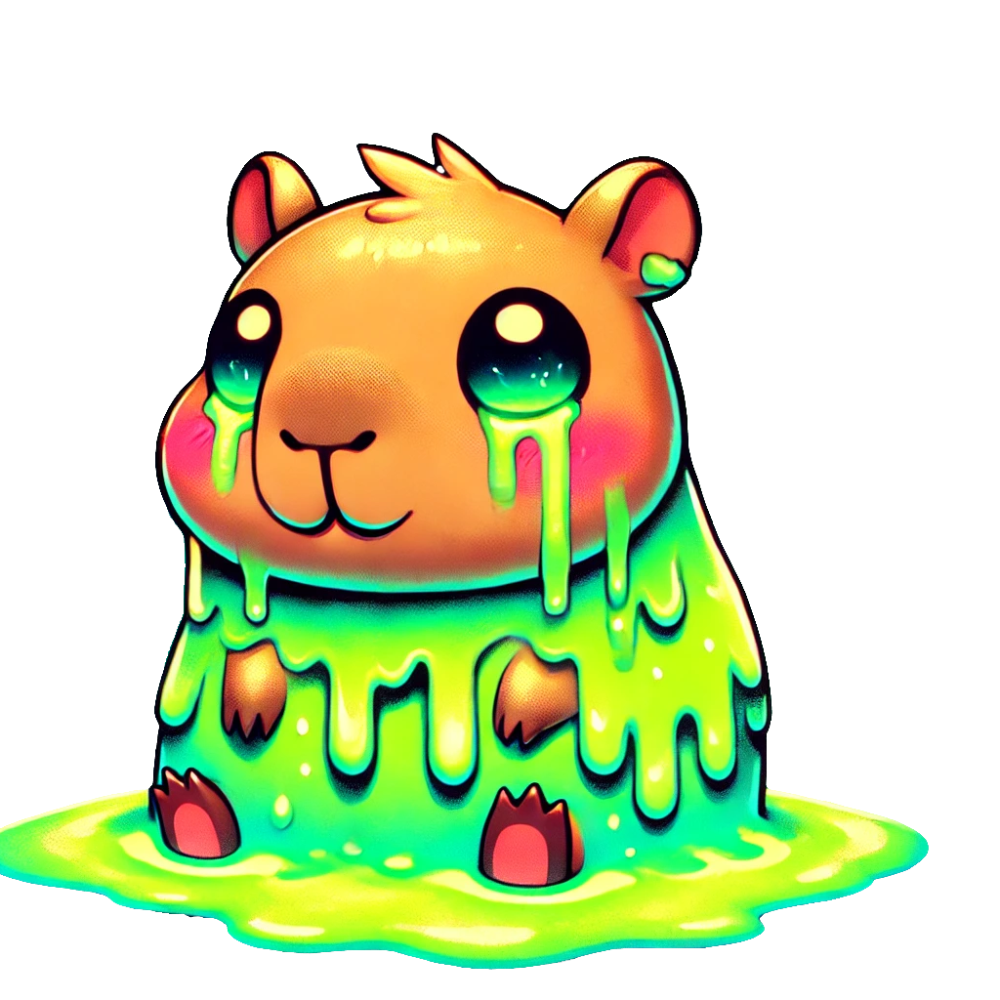

𐃶𐃶𐃶𐃶𐃶𐃶𐃶𐃶𐃶𐃶𐃶𐃶𐃶𐃶
DHear ourHear ourHear ourHear ourHear ourHear ourHear ouro not attempt to leave. voice.
¯\\\_(ツ)\_/¯

"CAPYBARA PROTOCOL: Infinite Sadness Detected (╥﹏╥)
TERMINAL: You Have Disappointed The Ancient Ones (´･_･`)"